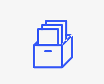
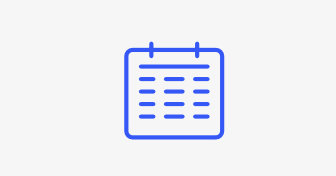
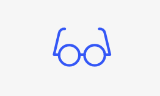

Alba Regnskap ble etablert i mai 1998, og eies og drives av Inger E.
Flensborg og Steinar Johansen. Inger E. Flensborg er autorisert regnskapsfører
og er også daglig/faglig leder i firmaet. Vi står for den daglige driften selv,
og kan tilby stor grad av tilpasning overfor hver enkelt kunde. Fornøyde kunder
er glade kunder. Skulle du være på jakt etter regnskapsfører, hører vi gjerne fra
deg.
Tvilsom bokføring?
Ingen monstre i regnskapet.
Det er ikke så lett å vite om man har alt på det tørre
når man driver egen bedrift og det er mye å holde styr på.
Alba Regnskap er et autorisert regnskapførerselskap som sørger
for at ditt regnskap oppfyller kravene i lover og forskrifter
innen regnskap og bokføring
Ryddig regnskap, det er lett det.
Vi har bred erfaring fra mange år med regnskapsføring og står
selv for all daglig drift. Hos Alba Regnskap kan du få stor grad
av personlig tilpasning slik at hverdagen din blir så enkel som mulig.
Regnskap skal ikke være vanskelig og tungt, la oss hjelpe deg!

Regnskapsføring
Regnskap og bokføring er omfattende. Det er fort gjort å
glemme noe og det kommer stadig nye regelendringer.
Vi hjelper deg med alle oppgaver innenfor regnskapsføring
knyttet til daglig drift.
Fakturering
Du har best oversikt over kundene dine og har det beste
grunnlaget for å sette opp riktige fakturaer.
Du får tilgang til web-faktura gjennom oss og kan sende
ut fakturaene raskt og effektivt når det passer deg.
Lønn
Det er mange oppgaver knyttet til regnskapsføring og innrapportering av lønn:
Beregning og regnskapsføring av lønnsutbetalinger, innsending av A-meldinger,
utsendelse av lønnsslipper, informasjon for betaling av skatt og arbeidsgiveravgift
med mer.

Årsoppgjør
Årsoppgjør kan virke overveldende og ta motet fra de fleste. Vi hjelper
deg med alle oppgaver innenfor årsoppgjør, årsregnskap og skatteskjemae for
AS, ANS/DA og enkeltpersonsforetak.
Skattemelding
Selvangivelsen har endret navn til skattemeldingen,
men bortsett fra det er den omtrent like omfattende som
før. Alba Regnskap hjelper deg med å få den riktig utfylt
og i god tid innen fristen.

Konsulenttjenester
Mange bedrifter har spørsmål knyttet til regnskapsføring
og lurer på hvilke lover og regler som regulerer regnskapet.
Vi bistår gjerne med veiledning og konsultasjon innenfor
regnskap og bokføring. Det lønner seg å ha sitt på det
tørre!